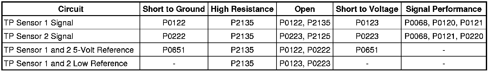
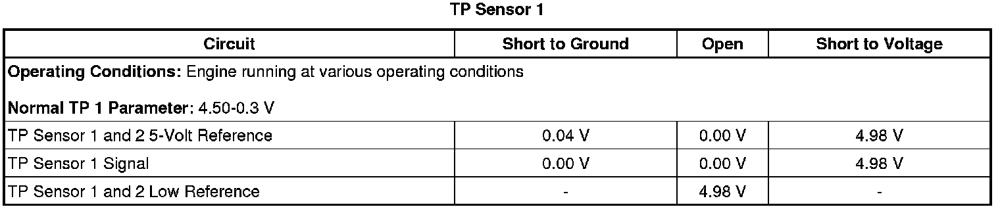
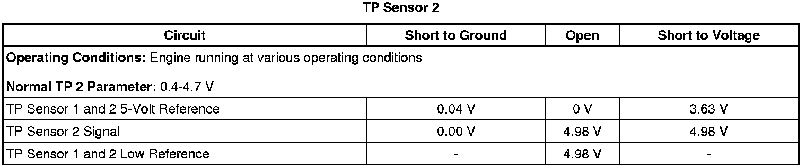

P0220
DTC P0120, P0122, P0123, P0220, P0222, P0223, or P2135
Diagnostic Instructions
* Perform the Diagnostic System Check - Vehicle (Initial Inspection and Diagnostic Overview) prior to using this diagnostic procedure.
* Review Strategy Based Diagnosis (Initial Inspection and Diagnostic Overview) for an overview of the diagnostic approach.
* Diagnostic Procedure Instructions (Initial Inspection and Diagnostic Overview) provides an overview of each diagnostic category.
DTC Descriptors
DTC P0120
- Throttle Position (TP) Sensor 1 Circuit
DTC P0122
- Throttle Position (TP) Sensor 1 Circuit Low Voltage
DTC P0123
- Throttle Position (TP) Sensor 1 Circuit High Voltage
DTC P0220
- Throttle Position (TP) Sensor 2 Circuit
DTC P0222
- Throttle Position (TP) Sensor 2 Circuit Low Voltage
DTC P0223
- Throttle Position (TP) Sensor 2 Circuit High Voltage
DTC P2135
- Throttle Position (TP) Sensor 1-2 Correlation
Diagnostic Fault Information

Typical Scan Tool Data


Circuit/System Description
The throttle actuator control (TAC) system uses 2 throttle position (TP) sensors to monitor the throttle position. The TP sensors 1 and 2 are located within the throttle body assembly. Each sensor has a signal circuit and share a 5-volt reference and low reference circuit.
Two processors are also used to monitor the TAC system data. Both processors are located within the engine control module (ECM). Each signal circuit provides both processors with a signal voltage proportional to throttle plate movement. Both processors monitor each other's data to verify that the indicated TP calculation is correct.
Conditions for Running the DTC
* DTCs P0601, P0602, P0603, P0604, P0606, P060D, P062F, P0641, P0651 are not set.
* The system voltage is greater than 5.23 volts.
* The ignition is in the Unlock/Accessory or Run position.
* DTCs P0120, P0122, P0123, P0220, P0222, P0223, and P2135 run continuously when the above conditions are met.
Conditions for Setting the DTC
P0120
TP sensor 1 voltage is less than 0.35 volt or greater than 4.58 volts for less than 1 second.
P0122
The engine control module (ECM) detects that the TP sensor 1 voltage is less than 0.35 volt for less than 1 second.
P0123
The ECM detects that the TP sensor 1 voltage is greater than 4.58 volts for less than 1 second.
P0220
The TP sensor 2 voltage is less than 0.35 volt or greater than 4.58 volts for less than 1 second.
P0222
The ECM detects that the TP sensor 2 voltage is less than 0.35 volt for less than 1 second.
P0223
The ECM detects that the TP sensor 2 voltage is greater than 4.59 volts for less than 1 second.
P2135
The difference between the TP sensor 1 and TP sensor 2 exceeds a predetermined value for less than 1 second.
Action Taken When the DTC Sets
* DTCs P0120, P0122, P0123, P0220, P0222, P0223, and P2135 are Type A DTCs.
* The control module commands the TAC system to operate in the Reduced Engine Power mode.
* A message center or an indicator displays Reduced Engine Power.
* Under certain conditions the control module commands the engine OFF.
Conditions for Clearing the MIL/DTC
DTCs P0120, P0122, P0123, P0220, P0222, P0223, and P2135 are Type A DTCs.
Reference Information
Schematic Reference
Engine Controls Schematics (Electrical Diagrams)
Connector End View Reference
Component Connector End Views (Connector Views)
Description and Operation
Throttle Actuator Control (TAC) System Description (Throttle Actuator Control (TAC) System Description)
Electrical Information Reference
* Circuit Testing (Component Tests and General Diagnostics)
* Connector Repairs (Component Tests and General Diagnostics)
* Testing for Intermittent Conditions and Poor Connections (Component Tests and General Diagnostics)
* Wiring Repairs (Component Tests and General Diagnostics)
DTC Type Reference
Powertrain Diagnostic Trouble Code (DTC) Type Definitions (Diagnostic Trouble Code Descriptions)
Scan Tool Reference
Control Module References (Programming and Relearning) for scan tool information
Circuit/System Verification
1. Ignition ON, observe the scan tool TP Sensor 1 voltage parameter. The reading should be between 4.5-0.40 volts, and change with the accelerator pedal input.
2. Ignition ON, observe the scan tool TP Sensor 2 voltage parameter. The reading should be between 0.35-4.59 volts, and change with accelerator pedal input.
3. Ignition ON, observe the scan tool TP Sensors 1 and 2 parameters. The scan tool should indicate Agree.
4. Clear the DTCs with the scan tool. Operate the vehicle within the Conditions for Running the DTC, or within the conditions that you observed from the Freeze Frame/Failure Records.
5. Ignition ON, perform several accelerator pedal sweeps, then observe the previous TP sensor parameters and DTC information with the scan tool.
• If DTC P0120 or P0220 are the only DTCs set, and all of the previous TP sensor parameters are normal, replace the ECM.
• If DTC P0641 or P0651 are set, refer to DTC P0641 or P0651 (P0641) .
Circuit/System Testing
1. Ignition OFF, disconnect the harness connector at the throttle body.
2. Ignition OFF for 90 seconds, test for less than 5 ohms of resistance between the low reference circuit terminal C and ground.
• If greater than 5 ohms, test the low reference circuit for an open/high resistance. If the circuit tests normal, replace the ECM.
3. Ignition ON, test for 4.8-5.2 volts between the 5-volt reference circuit terminals E and ground.
• If less than 4.8 volts, test the 5-volt reference circuit for a short to ground or an open/high resistance. If the circuit tests normal, replace the ECM.
• If greater than 5.2 volts, test the 5-volt reference circuit for short to voltage. If the circuit tests normal, replace the ECM.
4. Verify the scan tool TP sensor 1 voltage is less than 0.1 volt.
• If greater than 0.1 volt, test the signal circuit terminal D for a short to voltage. If the circuit tests normal, replace the ECM.
5. Verify the scan tool TP sensor 2 voltage is greater than 4.8 volts.
• If less than 4.8 volts, test the signal circuit terminal F for a short to ground. If the circuit tests normal, replace the ECM.
6. Install a 3A fused jumper wire between the signal circuit terminal D and the 5-volt reference circuit terminal E of the TP sensor 1. Verify the TP sensor 1 voltage is greater than 4.8 volts.
• If less than 4.8 volts, test the TP sensor 1 signal circuit for short to ground or an open/high resistance. If the circuit tests normal, replace the ECM.
7. Install a 3A fused jumper wire between the signal circuit terminal F and the low reference circuit terminal C of the TP sensor 2 Verify that the TP sensor 2 voltage is less than 0.1 volt.
• If greater than 0.1 volt, test the TP sensor 2 signal circuit for a short to voltage or an open/high resistance. If the circuit tests normal, replace the ECM.
8. Ignition OFF, disconnect the harness connector at the ECM.
9. Test for less than 5 ohms of resistance on all TP sensor circuits between the following terminals:
* ECM C2 signal circuit terminal 64 to TP terminal D
* ECM C2 signal circuit terminal 66 to TP terminal F
* ECM C2 5-volt reference circuit terminal 44 to TP terminal E
• If greater than 5 ohms, repair the affected circuit.
10. Test for infinite resistance between TP sensor signal circuit terminal D and TP sensor 2 signal circuit terminal F.
• If less than infinite resistance, repair the short between TP sensor 1 signal circuit and TP sensor 2 signal circuits.
11. If all circuits test normal, replace the throttle body.
Repair Instructions
Perform the Diagnostic Repair Verification (Verification Tests) after completing the diagnostic procedure.
* Throttle Body Assembly Replacement (Removal and Replacement)
* Control Module References (Programming and Relearning) for ECM replacement, setup, and programming